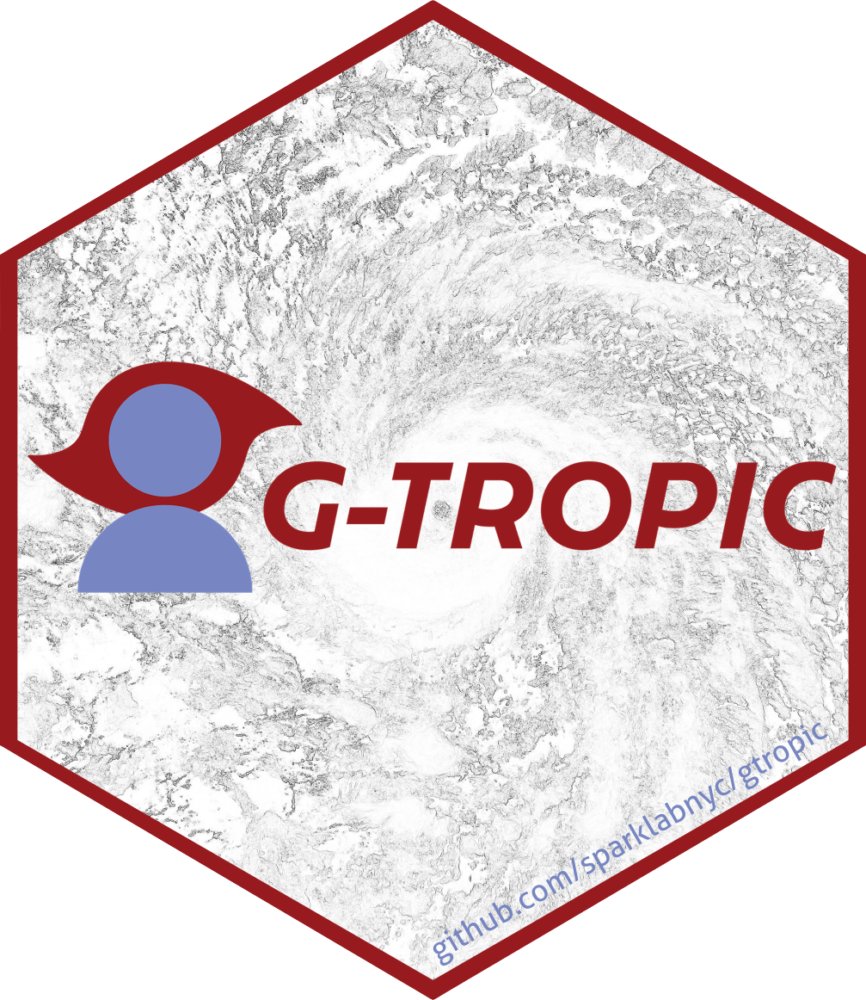

Known G-TROPIC data limitations
Source:R/precip_diagnostics.R
gtropic_known_limitations.RdDocuments temporary limitations in the published G-TROPIC source data that can affect retrievals and maps.
Details
Precipitation for small or coastal ADM2 units
Some small or coastal ADM2 units in the current precipitation data have no non-missing values. This can occur when no ERA5-Land precipitation grid cell is assigned to the unit. A future G-TROPIC dataset release is planned to fill these gaps using finer-resolution ERA5 precipitation data.
gtropic_data() warns when a precipitation query includes an ADM2 unit with
no non-missing precipitation values in the returned period. The complete
vector of identifiers is retained in
gtropic_warnings(x)$precip_all_missing_adm2_ids. Automatic precipitation
captions from gtropic_plot() include a shorter note for affected mapped
units.
The diagnostic is based on the values actually returned, rather than a fixed list of identifiers. It will therefore stop appearing when corrected source data provide precipitation for those units. Other temporary source-data gaps can also produce the same diagnostic.